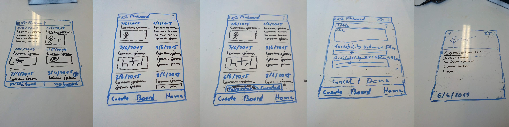
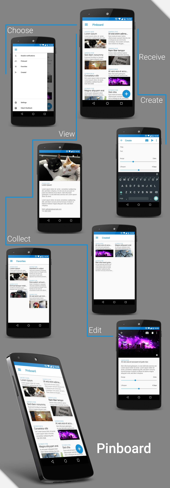

Pinboard
Pinboard is the result of a hackathon. The purpose of this application is to replace public bulletin/notice boards like these:

Users have the possbility to create notes and define a visibility range as well as a visibility lifespan. The notes are then glued to the location, based on the GPS coordinates. If another user walks into the note range, the note will appear on the Pinboard, if the user walks out of the range, the note will disappear. Users have the possiblity to favorite notes and keep them. The notes have the same level of anonymity as the notes on public bulletin/notice boards.
For the development of this application at the hackathon we used Ruby on Rails as back end and Knockout.js for the front end. I have developed on back end as well as on front end site.
This is a video which has been created at the end of the hackathon and shows partially the functionality as well as the design:
Recently I have redesigned the application applying Google's Material Design.

- Date:
Early 2015